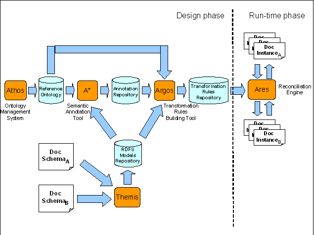

")

Semantics and ontologies
Introduction
One of the aims of ATHENA was to provide a basic set of semantic tools and services which can be used by other components in order to include semantic support for solving interoperability issues. Some of the solutions, such as the ontology management system, are more general purpose and can be used as basis for achieving different solutions, while other tools are oriented to solve specific semantic goals. In particular the semantic reconciliation allows to reconcile documents and messages, starting from a common ontology and semantic annotations, without the human intervention at run-time.
Semantic reconciliation suite
The figure below shows the ATHENA framework for semantic reconciliation as a whole and it clarifies the relationships between the different tools:

All the tools described have been developed within the ATHENA project:
- ATHOS: It is the Ontology Management System. It provides a web user interface for helping the users in the process of building and managing reference ontologies.
- THEMIS: It is the common RDFS repository. The other tools of the suite share common resources using Themis as central point and it provides basic functionalities for supporting the integration of the semantic components and existing SOA platforms. Both, A* and ARGOS, use the repository for accessing the resources to be annotated and ARES retrieves logical links between message instances of the run-time level with all the needed resources of the design phase (in particular the rule sets related to particular message instances).
- A*: It is the semantic annotation tool. Semantic annotation aims at giving a non ambiguous meaning to digital resources and represents a conceptual correspondence between resources and concepts in the ontology. The semantic annotation process results in semantic annotation expressions stored inside the tool itself and used by Argos as starting point for the creation of specific reconciliation rules.
- ARGOS: The usage of this tool is strictly related to the issue of semantic document reconciliation. Starting from the knowledge captured by the semantic annotations, the tool provides a user friendly web interface for writing reconciliation rules. These rules can be used at run-time in order to apply forward and backward transformations among business documents.
- ARES: It is the only tool of the framework which works at run-time. Its objective is to provide the semantic reconciliation service to external run-time environments. It is built for supporting SOA environments and the integration in pre-existing legacy systems.
Semantic enhancement for SOA and UMT2OWLS
UMT2OWLS is a tool to model visually the semantic enrichment of Web service interfaces description. It is based on the existing UMT-QVT tool. This extension allows to transform UML-based models for describing Web services directly in their WSDL and OWL-S representation. In this manner a real model oriented development is achieved. Obviously the resulted WSDL and OWL-S documents can be used in a Web services registry for the description of the service interface including all the necessary business and technical information.
The development of the tool has involved two different tasks. The first has been the definition and the extension of the pre-existing ACE-GIS standard for the service description in order to incorporate specific functionalities for the definition of all the parameters needed by the OWL-S description. The second task has been the real implementation of the plug-in of the UMT tool in order to realize the automatic transformation in the computer understandable format (WSDL and OWL-S).